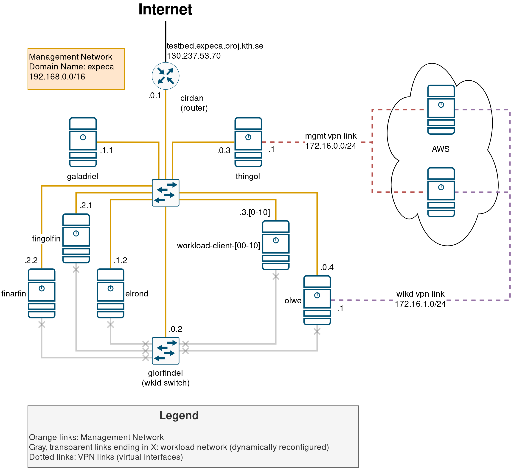

Management Network Overview🔗
This page details the current setup for the management network, used for the alpha version of the testbed.
Please read this page carefully before making changes to the network infrastructure

The testbed can be accessed from the internet at testbed.expeca.proj.kth.se or 130.237.53.70, on SSH port 2222.
The management network is statically addressed using a 192.168.0.0/16 CIDR block.
We use sub-ranges under this block to semantically separate devices on the network:
192.168.0.[1-255]: reserved for network infrastructure devices, such as routers, switches, and gateways.192.168.1.[0-255]: reserved for "core" functionality devices, such asgaladrielandelrond.192.168.2.[0-255]: reserved for radio hosts.192.168.3.[0-255]: reserved for workload clients.192.168.4.[0-255]: reserved for Software-Defined Radios.192.168.255.[0-254]: reserved for external devices (e.g. personal laptops) connected to the network. NOTE: This range is assigned dynamically by the router, using DHCP.
Additionally, we reserve two external ranges, 172.16.0.0/24 and 172.16.1.0/24, which are assigned to the VPN links to AWS.
These ranges should never be used for anything else; this will cause routing conflicts inside the network, as all devices are configured to use the VPN gateways to reach them.
IP address bindings🔗
| FQDN | IP | Function(s) |
|---|---|---|
cirdan.expeca |
192.168.0.1 |
Gateway, NAT, firewall |
glorfindel.expeca |
192.168.0.2 |
Managed workload network switch |
thingol.expeca |
192.168.0.3 |
DNS server, NTP server, VPN gateway |
olwe.expeca |
192.168.0.4 |
VPN gateway |
galadriel.expeca |
192.168.1.1 |
Ainur host |
elrond.expeca |
192.168.1.2 |
Cloudlet |
fingolfin.expeca |
192.168.2.1 |
SDR host |
finarfin.expeca |
192.168.2.2 |
SDR host |
forlong.expeca |
192.168.2.3 |
SDR host |
workload-client-[00-12].expeca |
192.168.3.[0-12] |
Workload client |
Created: 2022-05-16